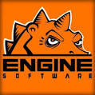

Terraria was made by Re-Logic in 2011 writte in C#, Re-logic at that time was composed of Andrew Spinks charged of design and program the game and Finn Brice who did the graphic design of the game. The game was released in may 2011 for windows,later the same year in december the game was uptaded to the version 1.1 adding new content to the game. In february the developpers announced that they will no longer add new content to the game only release a final bug-fix patch, it was not the case, the latest version is 1.4.3.4 launched in 2022, for 2023 we are waiting a new version with new content.
In september 2012 was announced that Engine Software and 505 game will launch Terraria to other platforms like Xbox and PlayStation, and after that slowly they will be launching in smartphones, macOS, linux and the consoles of Nintendo. Today being in 16 different platforms eachone having a different version. Terraria supports the moding community, with the most known free program TModLoader wich allows you to play the mods crated by the community, the most played Calamity. Today the game has a big community due to all the platforms who let everyone the posibility to experience Terraria.
Today Terraria is one of the best selling games in the world with over 44 million copies sell in 2022, and having generaly good reviews, in steam has more than 950.000 positive reviews of 1 milion reviews and having generaly good scores in every platform.

SO AGAIN: PLAY TERRARIA!